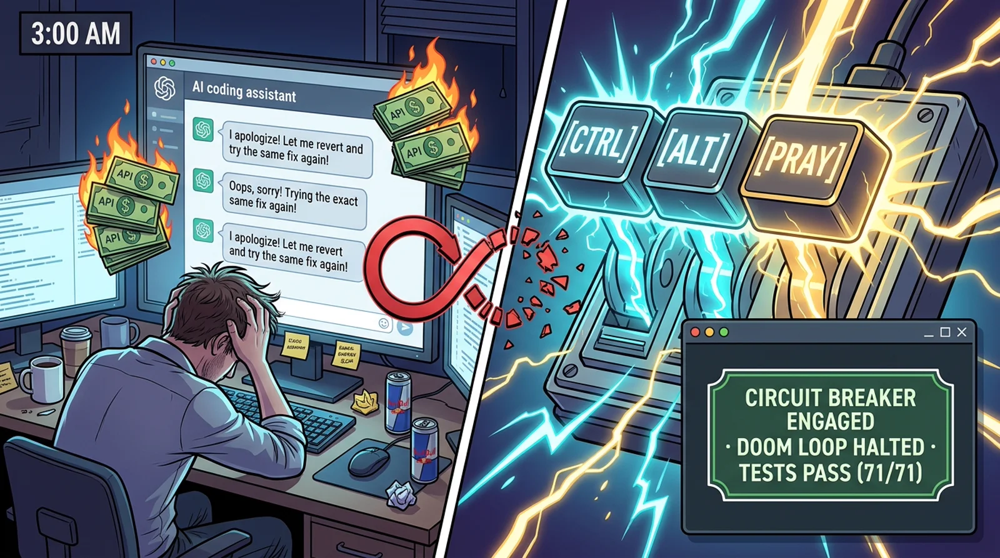
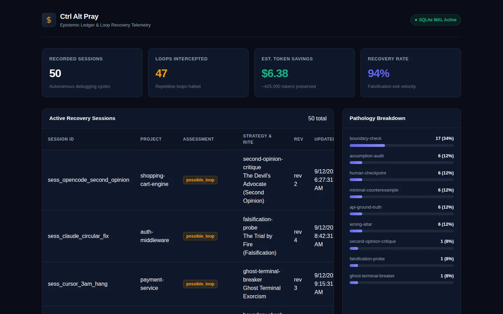

Stop letting autonomous coding agents burn $25 swapping true and false in a 3:00 AM death spiral.
An evidence ledger, 12 canonical falsification rites, and a 15-second terminal executioner.

No metaphors, no esoteric jargon. Just the zero-BS breakdown for cynical engineers who don't have time for tech-occultism.
An open-source, local Model Context Protocol (MCP) server + CLI runtime built for Cursor, Claude Code, Cline, and autonomous terminal agents.
The 3:00 AM AI Doom Loop. An AI agent fails a test. Instead of investigating, it apologizes, tweaks random lines, reverts, and tweaks again—burning $20 in tokens while the real bug was a deadlocked dev port or a stale dist/ cache.
(1) 2-Strikes Tripwire: Injects a rule into your agent config blocking edits after 2 failures.
(2) Evidence Ledger (pray): Inspects git, diff churn, and ports to give the AI 1 atomic probe.
(3) Process Executioner (pray-run): Auto-kills hung child processes and clears zombie ports after 15s.
Prompts have no memory across sessions, cannot check git diff --stat, cannot check whether port 3000 is deadlocked, cannot kill orphaned processes with SIGKILL, and LLMs routinely ignore prompt advice when caught in tunnel vision.
Run npx ctrl-alt-pray init. It detects Cursor, Claude, Cline, or Gemini and arms your repo with the 2-strikes tripwire and MCP configuration.
When the AI fails twice on the same check, the tripwire physically bars further code edits. The agent is forced to call the pray() MCP tool.
The Altar prescribes 1 of 12 canonical falsification rites. The agent tests one isolated variable, confirms reality, and resolves the issue in 1 clean commit.
Ctrl+C, tried Ctrl+Z, and was left with only one desperate move: praying. We turned developer pain into a memorable meme wrapped around a battle-hardened, zero-dependency engineering circuit breaker.
Experience what happens when blind patching is halted and replaced by an atomic falsification probe.
Engineered to interrupt cognitive decline before your credit card is drained.
When 2 consecutive patches fail with identical symptoms, the engine trips. It stops the agent from editing code and forces an explicit falsification check.
pray-run wraps commands with a 15-second freeze watchdog. Recursively terminates orphan child subtrees (PID 1 adopters), reclaiming locked ports and git index files.
Calling pray() without arguments inspects git status, dirty diffs, lockfiles, and occupied ports natively across Linux, macOS, and Windows.
Devil's Advocate critique challenges the proposed experiment before execution. Uses MCP 2026 sampling when available, falling back to instant 0-cost heuristics.
What happens to your development flow when failure states are structured instead of repeated.
| Failure Scenario | Standard AI Behavior (The Doom Loop) | With Ctrl Alt Pray (The Altar) |
|---|---|---|
| Stale Build Artifact | Edits source file 8 times. Test still fails. Apologizes 6 times. Swaps variable names. | Wrong Altar: Injects UUID marker into source. Detects missing stdout. Proves bundler is frozen in 1 step. |
| Hanging Test Watcher | Terminal sits silent for 15 minutes. Context window saturates with pipe timeouts. | Terminal Guardian: 15s freeze watchdog triggers. Cascade process-tree killer slays orphan PIDs. Releases dev port. |
| Swallowed Test Error | Tests show green despite defect. Agent assumes bug is in database or network layer. | Poison Chalice: Injects deliberate assert(1===2). Exposes that test suite is swallowing errors. |
| API Hallucination | Guesses non-existent method names recursively (getUser() → fetchUser() → findUser()). |
API Ground Truth: Runs 1-line script reflection: Object.keys(await import('...')). Reflects true exports. |
| Cognitive Panic | Generates paragraphs of polite apologies while repeating identical failed edits. | Anti-Apology Linter: Circuit breaker penalizes placation filler. Demands single falsifiable hypothesis. |
Battle-tested recovery patterns version-controlled with applicability triggers, probes, and safety guarantees.
Instantly equip Cursor, Claude Code, VS Code, Windsurf, Cline, Zed, and JetBrains AI with the 2-Strikes Circuit Breaker and MCP Altar.
Every loop recovery is committed to an ACID SQLite WAL ledger for replay and auditing.
